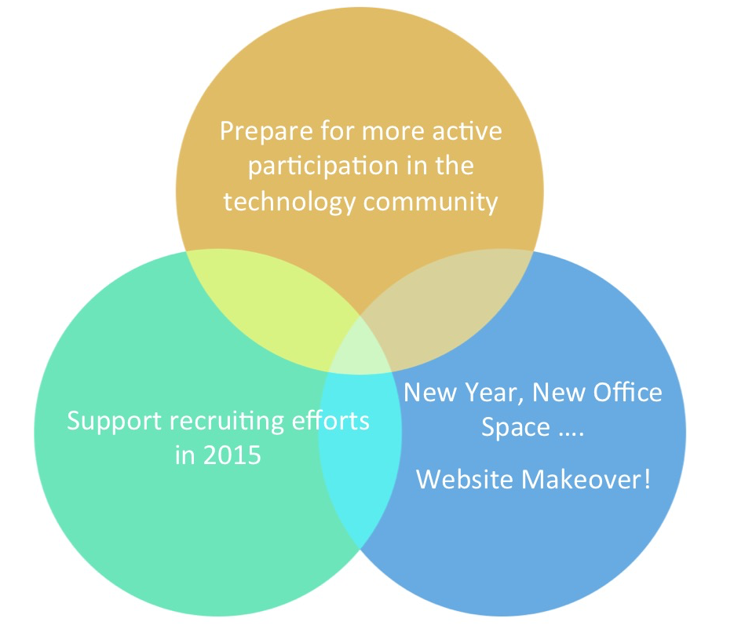
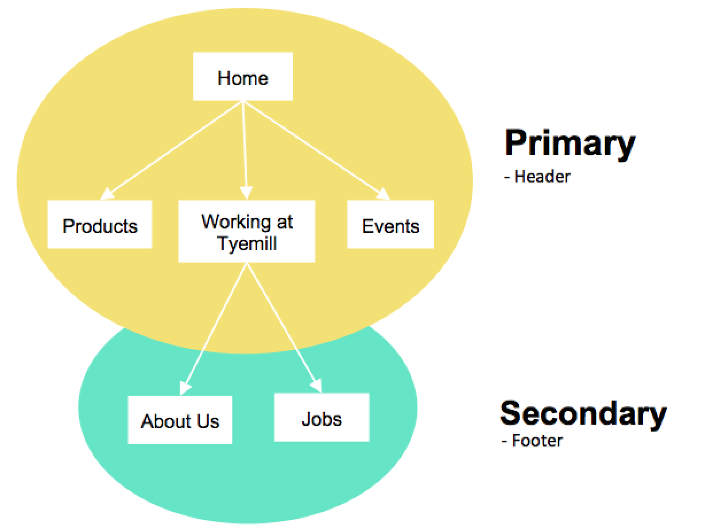

Introduction
A website redesign project for Tyemill with the focus of supporting recruiting efforts and preparing the company for more active participation in Seattle technology community.
Responsibility
I'm the UX Designer of the project and delivered Persona, Information Architecture, Wireframes and HTML/CSS.
Design Process
- Define goal of the project and target users.
- Conduct Research by interviews and exploration of modern website structures and design.
- Ideate site structure and design options.
- Critique design proposals with designers and stakeholders.
- Deliver developer-consumable project specs and development plan.
- Execute development plan and Ship the first release.

Project Journey
Let's look into the design process in detail!
1. Gather Requirement
Define goal of the project and target users.
Requirement gathering is the first step of almost every project and it’s certainly a very important step for website design projects. Defining the problems, goals, and user groups correctly sets a good base for the whole project and significantly helps designers to communicate with team members and stakeholders. Setting the context of why we’re building it and whom we’re building it for gives everyone the opportunity to give right-on feedback and guide the project to the right direction. According to my experience, requirement gathering step is especially important for website design project since people tend to define the types of projects looser because of its low cost and broad user definition.
To do this, I often start with a series of questions.
- Why are we building the website?
- Who are we building the website for?
- What are users trying to get out of the website?
- What are we trying to communicate to users through the website?
Concept & Goal of Tyemill.com
2. Investigation
Conduct Research by interviews and exploration of modern website structures and design.
The goal of the investigation phase is to understand how we can achieve the goals and effectively deliver the message to the target users. I always believe that user research is part of the whole design process that cannot be skipped. Even very minimal user research (10 minutes conversation with 5 people was what I did for this project) can have huge benefits of gaining insights and further help make the right decisions.
For this project specifically, we also spent some time researching the current web design trend and figuring out a general visual style direction that the team and stakeholders like to head for.
I usually bring the project definition and findings of user research back to the table after investigation phase to discuss with stakeholders and team members in presentation format.
Definition document for tyemill.com.


3. Ideation and Critique
Construct site structure
With a good definition of the project goals, my next step for the website projects was to think about high-level site structure. The site structure hugely depends on the importance of each element you want to show and the flows users might go through after landing on the page. It's a bit of guesswork, but after drawing out a couple versions of sitemaps and user flow diagrams, I usually get a better picture of how the users would perceive the site and information on the site.
Information Architecture of Tyemill.com
Wireframing
After defining the site structure, we started to brainstorm high-level concept and layout for each page by producing wireframes.
Produce Hi-fi Mockup (Visual treatment)
Visual design plays a big role in website design project, so before we even start to make prototypes, it’s crucial to explore the visual style options and present it to the bigger team. Visual design is subjective, therefore this is a very good opportunity to have a formal presentation to stakeholders and have their inputs on the look and feel of the site.
Prototyping
To demonstrate the interactions and experiment the flow of the whole site, we made our prototype by CSS and HTML.
Critique
Of course, during every step of the ideation journey, there is always lots of design discussion involved; I always believe that constantly bringing people to look at your work and share your status with stakeholder will benefit the design and project a lot. It’s not only to demonstrate your progress, get feedback, but also a good way to engage stakeholders in the process.
4. Build project specs
Deliver developer-consumable project requirement and collaborate with developers to figure out the amount of time and resource we need for the project.
5. Execute development plan and Ship the product
I followed along the whole development process, constantly checking in with the developers and offer CSS/HTML helps when needed and eventaully ship the first release with limited features and pages.